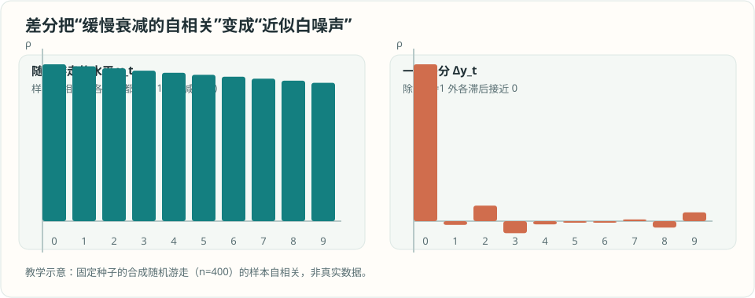
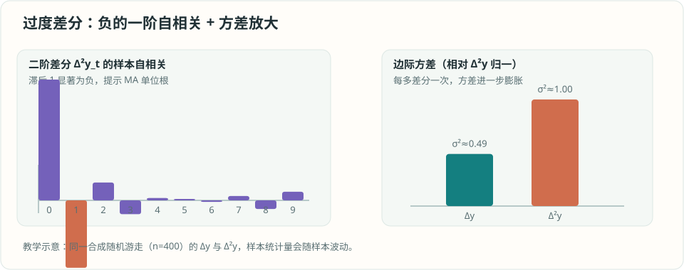
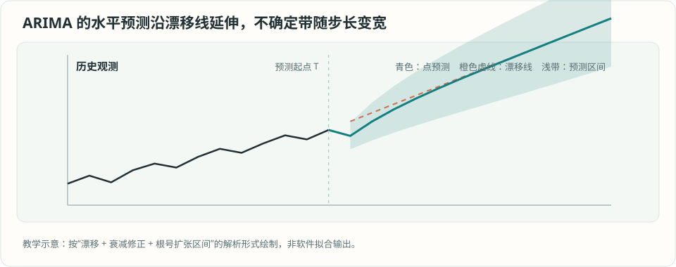

CHAPTER 11 / 28 · STATISTICAL MODELLING
差分与 ARIMA：把非平稳水平化为平稳动态
ARIMA 通过对序列做 d 次差分把缓慢变化的水平化为平稳的差分动态，再用 ARMA 建模、再积分回水平。本章厘清差分算子、单位根、过度差分的代价、定阶顺序与多步预测的行为。
上一章的 ARMA 建立在平稳假设之上。现实中大量序列（股价、GDP、累计销量）却带有缓慢漂移的水平。Box–Jenkins 的解决方式不是抛弃 ARMA，而是先做差分：把“水平”换成“变化量”，再对变化量建模。I（Integrated）指的就是这一步可逆的求和/差分关系。
需要先纠正一个常见误解：ARIMA 不是“自动让任何序列变平稳”的黑箱。差分是一种有代价的操作，次数过多会引入不可逆的 MA 结构并放大方差；次数应由单位根证据、残差诊断与前向预测共同决定。
01 · 为什么水平序列常不平稳
考虑随机游走 yₜ=yₜ₋₁+εₜ，其中 εₜ 是零均值、方差 σ² 的不相关创新。反复代入得 yₜ=y₀+Σεⱼ，于是 Var(yₜ)=tσ²——方差随步数线性增长。这意味着水平序列的均值虽不随时间漂移，但方差无界、自相关几乎不衰减，完全不满足 ARMA 所需的弱平稳条件。

这里要区分两类“不平稳”：确定性趋势（可看成回归中的时间函数）与随机趋势/单位根（冲击永久累积）。前者可以用去趋势或包含时间项处理，后者通常需要差分；把二者混为一谈会导致错误建模。
02 · 差分算子与 ARIMA 定义
滞后算子 B 满足 Byₜ=yₜ₋₁。一阶差分写作 Δyₜ=yₜ−yₜ₋₁=(1−B)yₜ，d 阶差分就是 Δᵈyₜ=(1−B)ᵈyₜ。ARIMA(p,d,q) 的做法是：先对 yₜ 做 d 次差分得到 wₜ=Δᵈyₜ，再假设 wₜ 服从 ARMA(p,q)。
当 d=0 时 ARIMA 退化为 ARMA。多数经济序列 d 取 1 就够；d=2 已属少见，除非有证据表明序列是二阶积分 I(2)。d 是模型结构的一部分，不是需要搜索越大越好的超参数。
03 · 单位根为何能被差分消除
对 AR(1) 过程 yₜ=φyₜ₋₁+εₜ，把它移到一边写作 (1−φB)yₜ=εₜ。平稳性取决于特征方程 1−φB=0 的根位置。
当 φ=1，序列就是随机游走。对它做一阶差分：Δyₜ=yₜ−yₜ₋₁=εₜ，正好得到白噪声。原因是差分算子 (1−B) 恰好抵消了 AR 多项式中的单位根因子 (1−B)，而非“差分抹掉了信息”。反之，若序列本来平稳（|φ|<1），差分会在分母留下额外的 (1−B)，这就是下一节的过度差分。
要注意单位根检验的方向与局限：ADF 的原假设是“存在单位根”，KPSS 的原假设是“水平或趋势平稳”，两者互补但不能当作证明。检验力在样本短、含结构断点或近单位根时都会下降，结论必须结合图形、理论与前向预测。
04 · 过度差分的代价
对一个已经平稳的序列再做差分会发生两件事：新序列 Δyₜ 的 MA 多项式带上了因子 (1−B)，即出现单位根，于是不可逆；同时边际方差被放大。若 yₜ 是 ARMA(p,q)，则 Δyₜ 是 ARMA(p,q+1)，其中多了这个单位 MA 根。

Δ²yₜ=(1−B)εₜ 是 θ=−1 的 MA(1)，理论 ρ(1)=−0.5；同一合成序列上，Δ²y 的方差约为 Δy 的两倍。图为教学示意，样本统计量会随样本波动。| d | 操作 | 常见场景 | 风险 |
|---|---|---|---|
| 0 | 不差分 | 已平稳或仅含确定性趋势 | 忽略真实单位根会导致伪回归 |
| 1 | 一阶差分 | 随机游走类水平（价格、累计量） | 若无单位根则引入 MA 单位根 |
| 2 | 二阶差分 | 仅当有 I(2) 证据 | 方差膨胀、区间被严重高估 |
由于过度差分后模型仍可能拟合得不错，“样本内 AIC 更小”不足以证明 d=1 优于 d=0。可靠的判据是差分序列的单位根检验、残差诊断，以及在不同 d 下比较前向多步预测。
05 · ARIMA 与 ARMA 的积分关系
差分与求和是一对逆操作，这正是名字中“Integrated”的含义。对同一个序列，差分把积分过程化为平稳过程；反过来，对 ARMA 序列累加会得到积分过程。
对预测而言，这个关系决定了反变换：先在差分序列上得到 ŵₜ 的条件预测，再累加回水平。累加会把点预测的不确定性逐层传播，所以水平预测区间会随步长变宽，详见第 07 节。
06 · 先定 d，再比较 p 与 q
一个可执行的顺序是：先定 d，再在固定 d 下比较 p、q。定 d 时结合单位根检验与图形：若 ADF 不拒绝单位根且差分后 ACF 快速衰减，倾向于 d=1；若差分序列仍表现出近单位根特征才考虑 d=2。R 的 auto.arima 与 Python 的 pmdarima 自动搜索本质上也是这个思路，但自动结果只是候选起点。
| 阶段 | 主要依据 | 不能代替什么 |
|---|---|---|
| 定 d | ADF（H₀：单位根）与 KPSS（H₀：平稳）互补，加上差分后的 ACF 形状 | 不能仅凭“趋势看着上升”就选 d |
| 定 p、q | 固定 d 后比较 AICc / BIC；差分序列的理论 ACF/PACF 形状只作线索 | 有限样本相关图有噪声，不能机械套“前几阶显著就用几阶” |
| 确认 | 创新残差诊断 + 真正未来窗口的前向回测 | 最小 AICc 不代表预测最优 |
比较模型前必须固定训练区间、差分与均值设定、似然约定及参数计数。AICc 在小样本下比 AIC 更稳妥，但本质上仍是拟合优度与复杂度的一步权衡，而不是对预测能力的直接度量。
07 · 多步预测沿漂移延伸
若差分序列带常数项 c，它能解释为水平中的线性漂移。在时点 T 已知历史时，水平预测由三部分叠加：最后一次观测水平、随步长线性增长的漂移、以及随时间按 AR 系数幂衰减的平稳修正。因此水平点预测最终不再趋向一个常数均值，而是沿一条斜线延伸。

√h 变宽。图为按解析形式绘制的教学示意，非软件拟合输出。要与差分序列的预测区分开：差分序列本身（去掉漂移后）的预测仍会趋向常数均值，但积分回水平后体现出漂移。同时也别把“预测区间变宽”误解为“模型变差”，这是积分过程固有的不确定性累积。
08 · 改变差分次数观察自相关
拖动滑块选择差分次数 d，看同一随机游走在不同 d 下的理论自相关形状。d=1 得到近似白噪声；d=2 则引入 θ=−1 的 MA(1)，在滞后 1 处出现约 −0.5 的负相关。
本图表示已知理论参数下的解析结果，不是从真实数据估计出来的。
09 · Python：拟合 ARIMA 并前向预测
下面生成一个含漂移的随机游走（一阶差分后应为白噪声），验证 ADF 结果，再用 ARIMA(1,1,1) 拟合前 420 期并对后 60 期做一次性多步预测。只依赖 numpy 与 statsmodels。
import numpy as np
from statsmodels.tsa.arima.model import ARIMA
from statsmodels.tsa.stattools import adfuller
from statsmodels.stats.diagnostic import acorr_ljungbox
rng = np.random.default_rng(11)
n = 480
y = np.cumsum(rng.normal(0.05, 1.0, n)) # 带漂移的随机游走
print("水平 ADF p=", adfuller(y, autolag="AIC")[1]) # 期望不拒绝单位根
print("差分 ADF p=", adfuller(np.diff(y), autolag="AIC")[1]) # 期望拒绝
train, test = y[:-60], y[-60:]
fit = ARIMA(train, order=(1, 1, 1), trend="t",
enforce_stationarity=True,
enforce_invertibility=True).fit()
forecast = fit.forecast(steps=len(test))
print("样本外 MAE:", np.mean(np.abs(forecast - test)))
print(acorr_ljungbox(fit.resid, lags=[12], model_df=2))
assert len(forecast) == len(test) == 60
assert adfuller(np.diff(train), autolag="AIC")[1] < 0.05trend="t" 给水平加一个线性趋势，效果等价于在差分序列里包含常数项（漂移）。断言只检查结构性质（差分后拒绝单位根、预测长度一致），不声称 ARIMA 一定优于朴素基线；真实项目中必须加上与随机游走基准的对比。
10 · 与 SARIMA 的衔接
ARIMA 只能处理非季节性的差分结构。当序列同时含季节周期（如空调销量的冬夏循环）与非季节趋势时，简单的非季节 ARIMA 要么欠拟合、要么需要很高的阶数才能拟合季节形状。下一章的 SARIMA 把差分从「一次」扩展到「季节性间隔的一次」，用 (1−Bˢ) 同时处理两类结构。
进一步阅读与技术核对
引用指向定义、检验与实现接口的官方资料。文中的图与模拟均为教学示意，并非经验表现的证明。